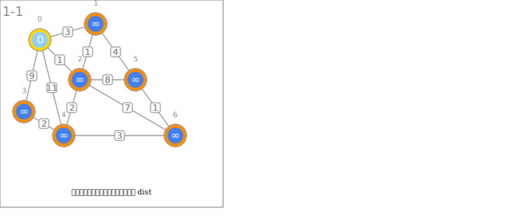
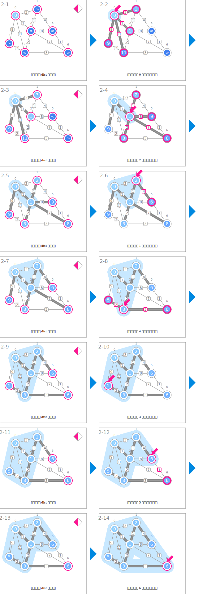

符号
| 数据 | ||
|---|---|---|
 |
从起点到各节点的暂定最短距离 | dist |
 |
在最短路径树中的父节点 | parent |
 |
节点之间的距离 | weight |
| 起点的确定和初始化 | ||
|---|---|---|
 |
将起点的最短距离初始化为 0 | dist[s] ← 0 |
 |
将其他节点的暂定距离初始化为大值 | dist[v] ← INF |
| 最短路径树的构建 | ||
 |
寻找暂定距离最小的节点 | # find minimum |
 |
指向暂定距离最小的节点 | u |
 |
更新节点的暂定距离和父节点 | if dist[v] > dist[u] + weight[u][v]: dist[v] ← dist[u] + weight[u][v] parent[v] ← u |
 |
表示最短路径树的暂定边 | (v, parent[v]) |
 |
扩展最短路径树 | 将 u 加入 T |
| 最短路径树的输出 | ||
 |
基于父节点的信息构建最短路径树 | |
动画
起点的确定和初始化

最短路径树的构建

最短路径树的输出